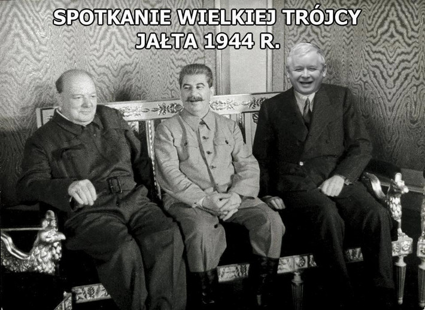

1. Za pomocą metody $("tag") dającej dostęp do wszystkich elementów poprzez TAG umieścimy w poniższym pustym akapicie tekst: "Wjeżdża jQuery :D"
Pamiętaj: w wyniku odwołania ę poprzez TAG zwracana jest lista elementów o tym samym znaczniku. Musimy zatem się odwołać poprzez indeks do interesującego nas elementu z tej listy.
W jQuery odwołanie się po indeksie dokonujemy poprzez dodanie do polecenia końcówki .eq(index), a więc całośc będzie nastepująca $("tag").eq(index)
2. Za pomocą metody $("#id") dającej dostęp do elementu poprzez ID umieścimy w poniższym pustym akapicie o id="p1" tekst: "Dżej Dżej... Okocza xD"
3. Za pomocą metody $(".class") dającej dostęp do wszystkich elementow poprzez CLASS umieścimy w poniższym akapicie o class="klasa1" tekst: "diDżejka xP"
Pamiętaj: w wyniku odwołania się poprzez CLASS zwracana jest lista elementów o tej samej klasie. Musimy zatem się odwołać poprzez indeks do interesującego nas elementu z tej listy.
W jQuery odwołanie się po indeksie dokonujemy poprzez dodanie do polecenia końcówki .eq(index), a więc całośc będzie nastepująca $(".class").eq(index)
Na przykładzie poniższej tabeli przedstawione zostaną metody wyodrębniania konkretnych elementów
z kolekcji, listy elementów zwracanych przed metody dostepowe jQuery.
| dżejPierwdżej | dżejTelmen | dżejSon |
| dżejMik | dżejŚrodwkowy | dżokDżejka |
| dżejSika | dżokDżej | dżejOstatnioej |
1. Za pomocą metody $("tag").eq(index) wyodrębnimy z pośród zwracanej kolekcji elementów TD
najbardziej środkową komórkę tabeli, pobierzemy z niej tekst i wyświetlimy w akapicie poniżej.
2. Za pomocą metody $("tag").first() wyodrębnimy z pośród zwracanej kolekcji elementów TD
pierwszą komórkę tabeli, pobierzemy z niej tekst i wyświetlimy w akapicie poniżej.
3. Za pomocą metody $("tag").last() wyodrębnimy z pośród zwracanej kolekcji elementów TD
ostatnią komórkę tabeli, pobierzemy z niej tekst i wyświetlimy w akapicie poniżej.
4. Za pomocą metody $("tag:lt(index)") wyodrębnimy z pośród zwracanej kolekcji elementów TD
komórki których index jest mniejszy od wartości wstawianej w miejscu index, w naszym przykładzie będzie to index == 4.
Po wyodrębnienu pokolorujemy te komórki na żółto
5. Za pomocą metody $("tag:gt(index)") wyodrębnimy z pośród zwracanej kolekcji elementów TD
komórki których index jest większy od wartości wstawianej w miejscu index, w naszym przykładzie będzie to index == 4.
Po wyodrębnienu pokolorujemy te komórki na zielono
6. Za pomocą metody $("tag").not(boolean) wyodrębnimy z pośród zwracanej kolekcji elementów TD
komórkę która NIE zawiera argumentu class="komorka". Pobierzemy jej zawartość tekstową i umiesicmy w poniższym pustym akapicie.
7. Za pomocą metody $("tag").filter(function(index){code}) wyodrębnimy z pośród zwracanej kolekcji elementów TD
komórki które mają index == 1 lub id="fifth" i narzucimy im nowy styl obramowania.
Jestem sobie zawartością :P
XXXXX - ale jestem nieuczesany, prosze uczesz mnie, za pomocą poniższego przycisku
Jestem wielką, grubą, pochyloną literką O
Ale jestem chudy, proszę nakarm mnie !
Jeżeli miałbyś być zwierzęciem to jakim byś chciał być:
Jaki jest najlepszy klub piłkarski w Polsce:
Ludzie, ludzie, oszalałem... kliknijcie w ten link: NUMERY KTÓRE PADNĄ W DUŻYM LOTKU
Tutaj otrzymasz darmowe BitCoin: FREE BITCOINS
Stara zawartość
Link podmieniony za pomocą funkcji: Onet.pl
Metody: .appned() .prepend()
Jazda !!! Jazda !!! Jazda !!!
Lista marzeń motocykli wg Pitka:
Metody: .after() .before()
Do porównania sposobów dodawania nowej treści wykorzystamy listę na końcu której będziemy dodawać kolejne znaczniki LI będące nowymi elementami HTML. To w przypadku metod .append() oraz .append()
Sposoby dodawania dla metod .before() i .after() będziemy pokazywać na
MUR
1. Dodawanie, tworzenie nowego elemntu HTML sposobem poprzez zwykły kod HTML
Ten sposób jest najprostszym. Sprowadza się do tego, że:
a) tworzymy sobie zmienną z treścią będącą kodem HTML, czyli treść nowego elementu HTML zamkniętego w odpowiednie znaczniki np.: var newElementByHTML = "< p >Nowy Akapit< / p >"
b) wywołujemy metodę .append(newElement) bądź .prepend(newElement) wraz z parametrem, naszą zmienną wczesniej utworzoną, będący naszym nowym elementem HTML.
Metodę taką wywołujemy na elemencie do którego chcemy dodadać ten nasz nowy element, np.: $("body").append(newElement). Tym sposobem dodamy nowy element na końcu lub początku elementu body.
Czyli na początku lub końcu naszej strony interentowej. Jednak w naszym przykładzie posłużymy się listą uporządkowaną OL, $("#porownanieADD").text(text).append(porownanie);
2. Dodawanie, tworzenie nowego elementu HTML sposobem poprzez jQuery
Ten sposób jest troche mniej intuicyjny do normalnego postepowania z jQuery i do odwoływania się do elementów HTML. Wyjaśniając, sprowadza się on do:
a) tworzymy sobie zmienną z naszym poleceniem dodającym nowy element $("< li >< / li >").text("Zostałem utworzony z jQuery");
Pierwsza część powyższego polecenia, tzn. $("< li >< / li >"), w tym przypadku nie oznacza, że odwołujemy się do wszystkich elementów LI tylko określamy jaki rodzaj elementu będziemy tworzyć.
W tym przypadku określamy, że będzie to LI podpunkt naszej listy. Ważne jest to aby rodzaj elementu jaki chcemy utworzyć podać w znacznikach z nawiasem, właśnie jak jest w przykładzie. Wówczas to nam mówi, że tworzymy nowy element HTML a nie odwołujemy się do kolekcji.
Podając w poleceniu "LI" bez nawiasów oznacza, że odwołujemy się do kolekcji LI. Z nawiasmi określami, tag nowego elementu HTML.
Następna część tego polecenia, tzn. .text("Zostałem utworzony z jQuery"); już okresla treść naszego nowego elementu. A dokładniej mówiąc, że dodajmyn węzeł tekstowy z naszą treścią.
O rodzajach węzłów możemy poczytać w części DOM, w plikach: 2_document_object_model_methods oraz 4_document_object_model_nodes
b) następny krok jest identyczny jak krok b) w pierwszym sposobie dodawania, tworzenia elementów HTML za pomocą zwykłego kodu HTML.
Tam jest wszystko opisane. Jedyną różnicą jest nasza zmienna będąca argumentem do metody dodającej nowy element HTML. Jednak to już nie ma znaczenia większego.
3. Dodawnanie, tworzenie nowego elementu HTML sposobem DOM
Ten sposób jest najdłuższy, ponieważ wykorzystujemy do tego czysty JavaScritp, czyli DOM HTML. Sposób dodawania nowego elementu takim sposobem była już przedstawiana w rozdziałe DOM_PAR w pliku 2_document_object_model_methods.js
Małe przypomnienie:
a) tworzymy nowy element / węzeł elementu, w naszym przypadku nowy podpunkt listy punktowanej, var porownanieElement = document.createElement("li");, należy pamiętaj, że w tym momencie jest to element wirtualny,
b) następnie tworzymy, również wirtualnie, węzeł typu tekstowego var porownanieText = document.createTextNode("Zostałem utworzony z HTML DOM - przypomocy .createTextNode -> .appendChild");, który później będzie treścią naszego nowo tworzonego podpunktu,
c) mając węzeł elementu oraz węzeł tekstowy, dodajemy węzeł tekstowy do węzła elemetu, nadal wszystko wirtualnie, porownanieElement.appendChild(porownanieText);,
d) na końcu, tak stworzony podpunkt wraz z treścią dodajemy do rodzica, w naszym przypadku do listy punktowanej, to już odbywa się za pomocą metody jQuery, $("#porownanieADD").text(text).append(porownanieElement);, i jest to identyczne jak w podpunkcie b) w pierwszym sposobie dodawania, tworzenia elementów HTML za pomocą zwykłego kodu HTML.
Tam jest wszystko opisane. Jedyną różnicą jest nasza zmienna będąca argumentem do metody dodającej nowy element HTML. Jednak to już nie ma znaczenia większego.
4. Powyżej porównalismy sposoby dodawania, tworzenia nowych elementów HTML.
Jednak to co istotne w metodach .append(), .prepend(), .before() oraz .after() to przyjmowanie wielu parametrów.
A co za tym idzie jednoczesne dodawaie, tworzenie wielu elementów HTML.
NEKROLOG
Niemający dziewczyny nieudacznik odszedł. Nie żałuj go. Nie płacz.
Był nikim.
SPRZEDAM !!!
Fiat 126p
Roczknik - 1987
Przebieg - 2km
Wyposażenie:
klimatyzacja wielostrefowa, wsp. kierownicy, CarPlay, HUD Display, el. szyby, alufelgi, ABS, ESP
POLECAM !!!
Nieużywany, stan salonowy
paradygmatem (p)
Dziordzobuszek
MATRYMONIALNE
Nieudacznik lat 32. Kochający pingwiny. Używający papieru toaletowego.
Pozna panią z Goleniów.
kolorowany (p)
Jestem strasznym, wielkim, zielonym Shrekiem !!!
WYNAJMĘ !!!
Gołębnik
Pojemność - 189 gołębi
Rok budowy - 2010
Wyposażenie:
automatyczne poidła i odchodniki, ogrzewanie, dwie dziury wylotowe, oświetlenie, monitorig
BEZOBSŁUGOWY !!!
POLECAM !!!!
Leszek
wodawodawodawodawodawoda
trawatrawatrawatrawatrawatrawa
śniegśniegśniegśniegśniegśnieg
Zwracanie wartości wymiarów
Ustawianie wartości wymiarów
1. Za pomocą $("tag").parent() wywołanego na elemencie $("span") w powyższych prostokontach zmienimy kolor obramowania jego rodzica.
2. Za pomocą $("tag").parents() wywołanego na elemencie $("span") w powyższych prostokontach zmienimy kolor obramowania jego wszystkich przodków.
2.1 Za pomocą $("tag").parents("tag") wywołanego na elemencie $("span") w powyższych prostokontach zmienimy kolor obramowania jednego z przodków którego wskazalismy jako parametr w .parents("tag").
3. Za pomocą $("tag").parentsUntil("tag") wywołanego na elemencie $("span") w powyższych prostokontach zmienimy kolor obramowania przodków zawierających się pomiędzy elementem span a elemente podanym w argumencie metody: .parentsUntil("div").
p (child) span (grandchild)
p (child) span (grandchild)
1. Za pomocą $("tag").children() wywołanego na elemencie div o class="descendants" pokolorujemy jego dzieci, pamiętając o tym, że będzie to potomstwo o jeden w dół.
2. Za pomocą $("tag").find("tag") wywołanego na elemencie div o class="descendants" pokolorujemy potomstwo które wskazaliśmy jako parametr w .find("tag").
2.1 Za pomocą $("tag").find("*") wywołanego na elemencie div o class="descendants" pokolorujemy jego całe potomstwo.
2.2 Za pomocą $("tag").find("tag") wywołanego na elemencie div o class="descendants" pokolorujemy potomostwo które wskazaliśmy jako parametr w .find("tag"), jednak zawęziliśmy wyszkukiwanie poprzez zapytanie CSS z dodaniem klasy .find("p.second") . I tak możemy sobie dowolnie zawężać, jak nam pozwala CSS.
p
spanp
1. Za pomocą $("tag").siblings() wywołanego na elemencie $(".siblings h2") pokoloruijemy jego rodzeństwo, pamiętając o tym, że będzie to całe rodzeństwo.
1.1 Za pomocą $("tag").siblings("tag") wywołanego na elemencie $(".siblings h2") pokoloruijemy jego rodzeństwo, ale tylko takie które spełnia nasz warunek podany w nawiasie tej metody, tzn. .siblings(".siblings h6").
2. Za pomocą $("tag").next() wywołanego na elemencie $(".siblings h3") pokolorujemy element będący jego nastepnym z rodzeństwa.
3. Za pomocą $("tag").nextAll() wywołanego na elemencie $(".siblings h3") pokolorujemy wszystkie elementy będące jako nastepne i będące jego rodzeństwem.
4. Za pomocą $("tag").nextUntil("tag") wywołanego na elemencie $(".siblings h3") pokolorujemy rodzeństwo zawierające się pomiędzy elementem h3 a elemenetem podanym w argumencie metodu: .nextUntil(".siblings p"). Musimy pamiętać, że dotyczy to elementów następujących po elemencie na którym jest wywoływana.
5. Za pomocą $("tag").prev() wywołanego na elemencie $(".siblings h3") pokolorujemy element będący jego wcześniejszym z rodzeństwa.
6. Za pomocą $("tag").prevAll() wywołanego na elemencie $(".siblings h3") pokolorujemy wszystkie elementy będące jako wcześniejsze i będące jego rodzeństwem.
7. Za pomocą $("tag").prevUntil("tag") wywołanego na elemencie $(".siblings h3") pokolorujemy rodzeństwo zawierające się pomiędzy elementem h3 a elemenetem podanym w argumencie metodu: .nextUntil(".siblings p"). Musimy pamiętać, że dotyczy to elementów wcześniejszych od elementu na którym jest wywoływana.
Widzisz mnie ?! A więc zapraszam... kliknij na mnie, a pokażę Ci zwycięskie numery LOTTO :D
Podwójne kliknięcie na mnie spowoduje, że do końca życia będziesz mieć szcęście ! No dawaj, klikaj !!!
Wiesz, że mam łaskotki na myszkę... Niegdy mnie nie najeżdżaj myszką !
Zaraz kichnę !!! Proszę najedź na mnie myszką, to mi pomoże nie kichać... plissss
Proszę wyciśnij mi pryszcza !!! Wystarczy wcisnąć i przytrzymać TU
No wyciśnij tego proszczya !!! Za krótko przytyrzymałeś, jeszcze raz, wciśnij przytrzymaj dłużek i puść... TU
Lata mucha...
Myślisz, że biały ?:Nacisnij myszką, a potem puść na poniższym akapicie, a zobaczysz co się stanie:
POLSKA !!!
Na poniższym DIVie przedstawimy metody do uzyskiwania efektów ukrywania i wyświetlania elementów
GRATULACJE !!!
Wygrałeś 4 tysiące jenów !!!